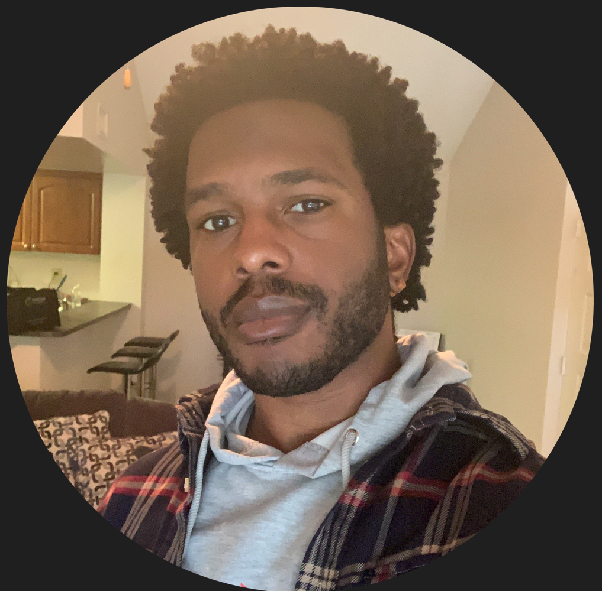

Jamar Andrade
I am a senior computer science student with experience in full stack web development. I have a strong background in programming languages such as Python, JavaScript, and Java. In addition to my technical skills, I am also a dedicated volunteer with LACCEI, working with different technologies, and enjoy giving back to my community.
Experience


Projects
-
Registration Form | Node.js, Firebase, Netlify, JavaScript
- Cooperated with a team to develop a form to pre-screen candidates for a professor role, saving them funds.
- Initiated technical design layout using UML and markdown documentation inside of a GitHub repository.
- Developed the frontend and backend using Netlify, Node.js, and Firebase. Delivered a flexible and scalable app.
-
Note-Taking Application | PHP, Postman
- Designed skeleton code for 5+ volunteers to follow/build a Note Taking App that included PHP and Postman.
- Curated guide designed to be easily understood and explained about APIs with system architecture.
- Mentored volunteers through observation, providing documentation, and guidance throughout their process.
-
Shopping Cart Application | Java, Marvin
- Exhibited SOLID and OOP principles to create a shopping cart application.
- Introduced UML diagrams, use cases, code optimization, eliminated code redundancy, and used design patterns.
- Planned implementation for the structure of the application through collaboration and communication with colleagues.
Hobbies
- Video games: Playing video games help me blow off steam when it comes to classwork overload in college.
- Electronics: Building and tinkering with electronics, such as custom desktop computers, microcontroller projects, or robotics.
- Coding outside of work: I love to take courses on Udemy pertaining to web development.